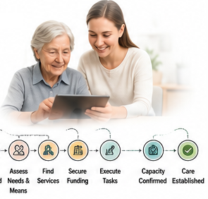
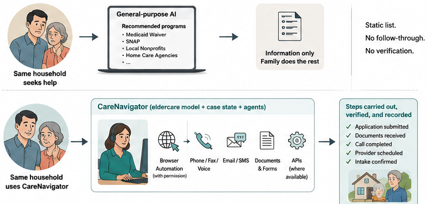
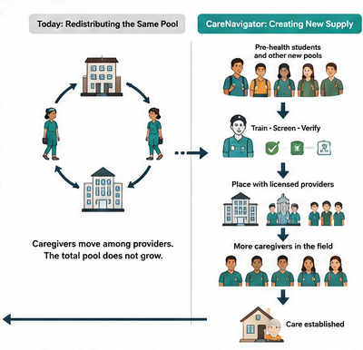
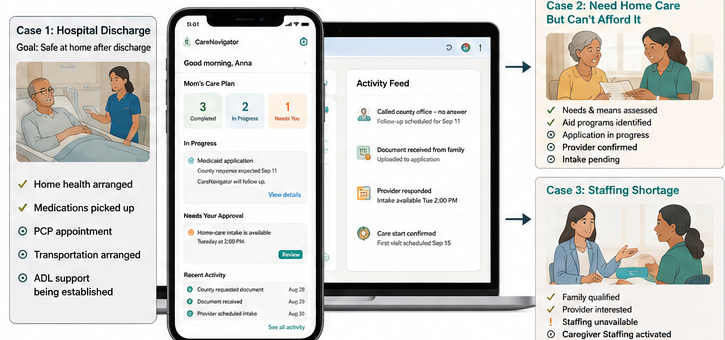

Key Innovation 1: Making the care-establishment pathway computable. Eldercare is not a single transaction. A recognized need can trigger needs assessment, eligibility screening, funding applications, provider search, repeated communications, documentation requests, capacity checks, staffing, service initiation, and follow-up over days to months. Existing systems generally represent only isolated pieces of this process. That fragmentation limits both automation and measurement because a computer cannot reliably act on a pathway it cannot observe as a persistent sequence of states.

Figure 3. Real-world events become a longitudinal, computable care-establishment pathway.
Phase IIB established the substrate for the beginning of this pathway: an eldercare-specific language model and live web and mobile interfaces that capture needs, means, benefits and aid eligibility, care requirements, and provider and service information. The CRP extends that representation longitudinally through execution and outcome. Each case maintains a structured state describing the active need, candidate funding, selected services, provider capacity, required tasks, permissions, communications, evidence, and whether care was actually established. An application submission, a request for additional documentation, a provider declining because of staffing, a voicemail, or confirmation of a first shift becomes a timestamped event with provenance rather than disappearing into disconnected calls, forms, portals, and inboxes.
This representation is technically enabling, not merely descriptive. Current program rules and provider facts remain in retrieval sources read at the time of use rather than being memorized into a model. The longitudinal record instead captures what happened in practice. It therefore instruments the poorly observed interval between recognized need and established care and provides the persistent state required for the downstream execution and workforce innovations. Executed cases create an outcomes layer describing which routes were open, which applications were approved or denied, which offices responded, where capacity blocked care, how long each transition took, and what ultimately established care.
Key Innovation 2: AI agents that execute the care-establishment pathway. The prevailing paradigm in eldercare technology is to inform, recommend, refer, or plan and then leave the family to execute. Yet the administrative work after a plan is produced is precisely where families can be lost. CareNavigator advances from determining what should happen to executing what must happen, while the family retains decision authority. The unit of technical success therefore shifts from information delivered to authorized work completed and, ultimately, care established.
The novelty is not the generic existence of AI agents. Tool-using agents are emerging across industries. The proposed advance is a bounded execution architecture acting on an eldercare-specific longitudinal substrate spanning public aid, insurance benefits, healthcare-adjacent administrative tasks, and long-term services and supports. These domains differ in who pays and what documentation they require, but share an administrative sequence that can be represented, executed, observed, and verified. This makes workflows such as post-discharge follow-up, transportation scheduling, benefit activation, home-care establishment, assisted-living search, repeated provider outreach, and confirmation that services actually began computable without claiming clinical authority. Each executed case also expands the outcomes layer in Innovation 1, creating a flywheel in which more execution produces more observed rules, capacity, and outcomes and better routing for subsequent families.
CareNavigator will combine the Phase IIB eldercare model with the longitudinal case state in Innovation 1 and bounded, tool-using agents. The model interprets the case and selects an allowed workflow. Deterministic tools then perform the external work through APIs where available, permissioned browser automation for web portals, document preparation, scheduling, and communications through email, SMS, voice, and fax. A family could authorize the system to prepare and submit an LTSS application, contact home-care agencies, schedule transportation, follow up on a post-discharge task, or use an uploaded insurance policy to identify and activate underused nonclinical benefits. Every action and response writes back to case state so the next step is conditioned on what actually happened rather than on a static plan.
The engineering challenge is persistence across real-world delay and failure. A case may wait for a county office, receive a voicemail, require another document, encounter a closed portal, or be rejected by a provider with no staff. Execution therefore follows an event-driven loop: act, observe or wait, update state, return at the appropriate time, and verify or escalate. Consequential actions remain permission-gated. Unsupported workflows, ambiguity, and failures route to a human navigator, initially the research team and later a scalable support function. The system does not provide medical advice, place clinical orders, or make clinical decisions. When protected health information is supplied, it is used only to identify or execute authorized administrative actions.

Figure 4. The same household can receive information from general-purpose AI or enter a persistent workflow that performs and verifies authorized work.
Key Innovation 3: Infrastructure that creates new caregiver capacity where the pathway fails. Navigation cannot establish care when no worker is available to deliver it. Most staffing channels compete for workers already inside the direct-care labor market, so one provider's hire can become another provider's vacancy. Olera instead proposes infrastructure for activating new labor pools and directing that new supply toward observed capacity failures.
Caregiver Staffing is also coupled to the instrumented pathway rather than operating only as a generic staffing marketplace. Family denials, provider-reported vacancies, service type, geography, shift requirements, worker density, and observed capacity failures can reveal where workforce shortage is preventing care establishment. CareNavigator can therefore trigger targeted staffing when a family is blocked, while the same staffing infrastructure remains available directly to providers that need workers even when Olera did not originate the family referral. The resulting worker and placement outcomes write back to the same longitudinal system, allowing the CRP to test whether new supply actually expands capacity rather than merely moving workers between employers.

Figure 5. Existing staffing channels redistribute a finite pool. Olera adds new entrants, verifies their experience, and can direct supply toward observed shortages.
The first population is pre-health students, a uniquely well-positioned pool because nursing, medical, physician-assistant, and allied-health pathways often value or require documented patient-care experience. Olera can reach them through campus organizations, pre-health programs, career offices, and digital recruitment. Our existing pilot generated more than 900 applicants, providing preliminary evidence that this channel can recruit without simply bidding workers away from incumbent employers. The pathway carries a new entrant through online training, screening, identity and credential verification, placement with a licensed provider, employer supervision, and a verified longitudinal record of caregiving experience.
That portable record can accumulate hours, employers, training, competencies, populations served, supervisor evaluations, reliability, background checks, and references. It reduces repeated verification as workers move between employers and creates an incentive to maintain performance over time. The infrastructure is population-agnostic. Other pools could include students outside health professions, career changers, retirees, and community members whose entry barriers can be reduced through the same pathway.
Final end-product: The CareNavigator experience. These innovations converge in the existing CareNavigator web and mobile interfaces rather than as three independent research products. To families, the underlying architecture appears as one longitudinal case: what is needed, what CareNavigator is doing, what is pending, what requires approval, and whether care has been established. The same platform can carry very different real-world cases. After hospital discharge it can follow administrative tasks such as home-health coordination, medication pickup, PCP or specialist scheduling, transportation, and needed ADL or IADL support. For a family that needs home care but cannot afford it, it can move from needs and means assessment through aid applications, provider capacity, and service initiation. When the limiting step is workforce, the pathway can identify the capacity failure and activate Caregiver Staffing. Across use cases, the three innovations serve the same first-principles endpoint established in Significance: not a recommendation, referral, or completed form, but care actually established before unmet need feeds the vicious cycle.

Figure 6. One CareNavigator experience, different paths, the same outcome: care established.